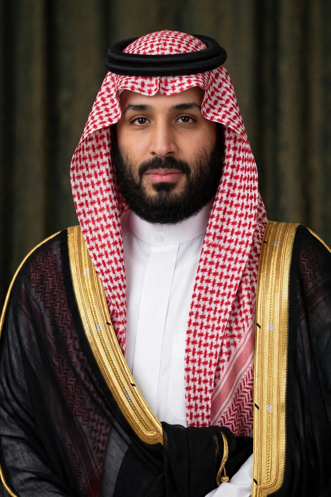

Mohammed bin Salman Al Saud (born 31 August 1985), colloquially known by his initials MBS, is Crown Prince and Prime Minister of Saudi Arabia. He has served as crown prince since 2017 and prime minister since 2022, and is considered the de facto ruler of the kingdom under his father, King Salman.

| Mohammed bin Salman | |
|---|---|
| Born | 31 August 1985, Riyadh |
| Title | Crown Prince of Saudi Arabia (2017–); Prime Minister (2022–) |
| Father | King Salman |
| House | Al Saud |
Mohammed is the son of King Salman and Fahda bint Falah Al Hithlain. He earned a bachelor's degree in law from King Saud University and worked in the private sector and as an adviser to his father when Salman was governor of Riyadh and later crown prince.
In January 2015 he became Minister of Defense and launched Saudi Arabia's intervention in Yemen. In June 2017 King Salman removed Mohammed bin Nayef as crown prince and appointed Mohammed in his place. In November 2017 hundreds of princes, ministers and businessmen were detained in an anti-corruption purge at the Ritz-Carlton in Riyadh.
His Saudi Vision 2030 program seeks to diversify the economy away from oil, develop public service sectors, and attract investment, including projects such as Neom. Social reforms included lifting the ban on women driving (2018), curbing the religious police, and opening cinemas and entertainment venues, alongside continued repression of dissent.
He has been widely linked by the CIA and other investigations to the 2018 assassination of journalist Jamal Khashoggi, which he has denied ordering. Saudi Arabia's role in the Yemen war and human rights record have drawn international criticism.